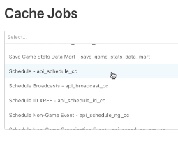
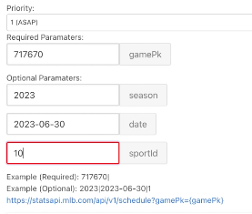
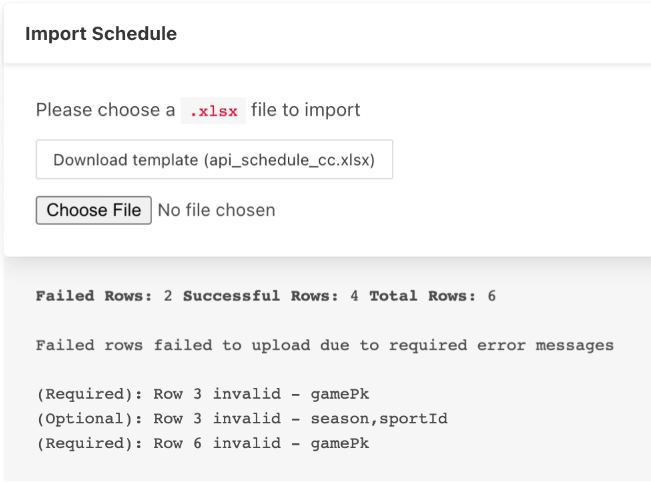

MLB Cache Management Tool
What was the problem?
When a player hits a home run, fans expect stats to update immediately on MLB.com, but cached data can't refresh until those entries are cleared. The Data Platform team needed a tool to clear only the appropriate cache entries on demand.
What did I build to solve it?
I redesigned MLB's internal NORAD Cache Jobs page for safety and accuracy. Using JavaScript, React, and SQL, I organized inputs into required vs. optional parameters, added validation against MLB's Stats APIs (sportId, leagueId, etc.), built a bulk Excel upload feature, and used React state to block invalid submissions before they hit production.


